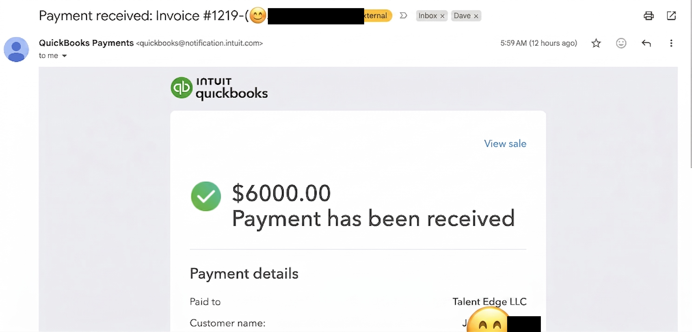

Quick Summary
- First payment hit at 6 AM. $6,000. Real money from real people who believe in what we are building.
- Built and launched three tools before 8 AM: a certification program calculator at ai-officer.com, a retreat planning calculator, and a visual CRM dashboard.
- Full team sprint from 10 AM to 6 PM. Global CLAUDE.md setup, advanced Claude workflows, and agent infrastructure.
- Project manager agent wired to Telegram. Daily summary to the whole team by 9 AM. Humans first, then agents, then alignment.
- Marketing team workflow locked in. Writer agent Tuesday, 48-hour human review, designer agent Thursday, live the following week.
The Context
Day 7 of the Infinite Leverage Blueprint. The team was coming at 10 AM, so I had a few hours alone to knock out things that needed focus. After the team arrived, we had an eight-hour sprint building agent infrastructure that will keep running long after anyone walks away from their desk.
This was the day it stopped feeling like an experiment and started feeling like a company.
Three tools shipped before the team arrived. First, a certification program calculator live at ai-officer.com where businesses can price out the cost of certifying their team members. Tiered pricing that updates in real time based on group size. It gives people agency. It answers the question before they even think to ask it.
Second, a retreat planning calculator. Different tool, different purpose. This one helps potential retreat attendees see what the experience looks like at different group sizes and configurations.
Third, a visual CRM dashboard. Not a spreadsheet pretending to be a CRM. An actual visual interface for tracking leads, conversations, and pipeline across properties.
I also worked on the homepage, applying the design system so everything feels consistent, and updating the team section to include photos of Dave Brooks and David Nielsen. Small things. But the kind of details that signal: this is real, these are real people, we care about how this looks.
Want to see what these tools actually look like? Reach out and I will send you screenshots of the certification calculator, retreat planner, and CRM dashboard. All built by one person before breakfast.
Three interactive tools live before 8 AM. A certification calculator, a retreat planner, and a CRM dashboard. Each one is a sales conversation happening 24 hours a day without you in the room. When someone can see the math themselves, the friction between interest and commitment drops to nearly zero.
When the team arrived, we had a list. We started by watching a video together on advanced Claude usage: best practices, how to get the most out of it when you are building real systems, not just asking questions.
From there, we built a global CLAUDE.md setup. A templatized project configuration file that sets variables for GitHub, Supabase, and the shell environment in one pass. Our engineer TRAC had built a setup style that lets you run it once and have everything wired. That alone saved hours of repetitive setup work.
The global CLAUDE.md is not just a config file. It is the difference between spinning up a new project in 30 minutes and spending half a day copying variables, checking permissions, and fixing broken connections. Build the template once. Use it everywhere. That is the pattern.
We realized we had not been doing a good job of coordinating the agent layer with the human layer, and in some cases had not really set it up at all. We needed a daily process that worked in the right order.
First: check what humans want to accomplish. Then check agent daily jobs. Add anything extra, align, send a summary. We hooked it into Telegram so by 9 AM every morning, everyone on the team gets a summary of what is happening.
Most teams that try to use AI agents fail because they let the agents run without human checkpoints. The order matters. Humans first, then agents, then alignment. Get that wrong and you end up with a system nobody trusts.
Building the marketing team took longer than expected, mostly because we had to get the folder structure right before anything else would work. Agents are virtual. They spin up fresh each time. So if you want them to actually function, every folder needs to have the right context and the right skills packed in, without burning a ton of tokens on every run.
Once we got that organized, we figured out the full content workflow. Tuesday the writer agent runs. Wednesday and Thursday is a 48-hour human review window. Thursday the designer agent runs. The following week everything goes live on schedule.
The campaign manager role stays human for now. We want to feel this out for a couple of months before we hand that off. But the sourcing is organized: four content categories, all the source material indexed and ready to go.
Next up for marketing: amplification across our networks, PR outreach to journalists and podcasters, and eventually reactivating our email list. It has been cold for a while but it is bigger than most people realize.
What We Actually Shipped
The compact version. No hero lap, no drama, just the list.
- First payment received. $6,000. Two retreat confirmations paid in full.
- Certification program calculator. Live at ai-officer.com. Businesses can price out certifying their team members.
- Retreat planning calculator. Interactive tool for retreat attendees to explore configurations.
- Visual CRM dashboard. Real interface for tracking leads, conversations, and pipeline across properties.
- Homepage design system applied. Consistent look. Team section updated with photos.
- Global CLAUDE.md setup. Templatized config for GitHub, Supabase, and shell environment. Run once, everything wired.
- Project manager agent. Daily process: humans first, agents second, alignment third. Summary to Telegram by 9 AM.
- Marketing team workflow. Writer Tuesday, review Wed-Thu, designer Thursday, live the following week.
- Folder structure for agents. Context and skills packed per folder. No wasted tokens on spin-up.
- Four content categories sourced and indexed. Ready for the writer agent to run Monday.
What's Next
Edge 8 website rebuild. Fresh content queued for Monday. The writer agent gets its first real run. Day 8 is going to be interesting.
The Real Insight
Day 7 felt like building something that will keep running after I walk away from my desk. Not automating for the sake of it. Not replacing people. But creating a system where humans do what humans do best, making decisions, building relationships, staying accountable to each other, and the agents handle the repetitive, consistent work in between.
The $6,000 that came in this morning was not just revenue. It was validation that the thing we are building is real enough to pay for.
That is the machine behind the curtain. Not flashy. Not magic. Just systems, built in the right order, running without you in the room.
Read next: Day 6: Notifications → · Day 5: SUPAbase → · Day 1: The Vision →
Frequently Asked Questions
How does the retreat pricing calculator work?
The pricing calculator is fully editable and live. It lets potential members see what they would pay based on group size rather than staring at a static number. Up to 25 members is $99 per person, 26 to 50 is $75, and over 50 is $25. The discount from the base $99 rate updates in real time as you adjust group size.
What is the project manager agent and how does it work?
The project manager agent runs a daily process: first it checks what humans want to accomplish, then checks agent daily jobs, adds anything extra, aligns priorities, and sends a summary to Telegram by 9 AM every morning. Everyone on the team gets a summary of what is happening. No more wondering if we are aligned.
What does the marketing team content workflow look like?
Tuesday the writer agent runs. Wednesday and Thursday is a 48-hour human review window. Thursday the designer agent runs. The following week everything goes live on schedule. The campaign manager role stays human for now. Four content categories with all source material indexed and ready to go.
What is the global CLAUDE.md setup?
A templatized project configuration file that sets variables for GitHub, Supabase, and the shell environment in one pass. Our engineer built a setup style that lets you run it once and have everything wired. It saves hours of repetitive setup work when spinning up new projects or agent environments.